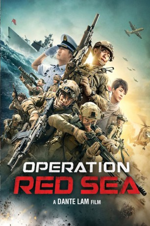

#9752 Operation Red Sea
 
 IMDB-Wertung: 6.9 / 10
IMDB-Wertung: 6.9 / 10  Tomatometer: 78
Tomatometer: 78  Metascore: 0
Metascore: 0 
"Sea Dragon" ist eine Spezialeinheit der chinesischen Marine, die gerade erst einen Einsatz gegen somalische Piraten erfoglreich beendet hat. Dass ihr nächster Auftrag aber noch weitaus gefährlicher sein wird, ahnt die Truppe noch nicht: In einer nordafrikanischen Republik droht ein blutiger Putsch, der das Leben hunderterter Chinesen vor Ort in Gefahr bringt. Ausgerechnet während der Evakuierungsmission erfährt das Team von einer Lieferung hochgradig radioaktiven Materials, auf welche die vorherrschende Terrorzelle wartet. Jetzt gilt es nicht nur, ihre Landsmänner in Sicherheit zu bringen, sondern eine Katastrophe zu verhindern, die weltweite Ausmaße annehmen könnte...
Jahr: 2018
Dauer: 138 Minuten
FSK: 18
Land: China Studio: Splendid FilmTonspuren:
Untertitel: Deutsch,
Auflösung: 1080p (1920x808) Größe: 12902 MB
Genre: Action, Thriller, Drama, Krieg
Regisseur: Dante Lam
Drehbuch: Ji Feng
Soundtrack: Elliot Leung
Darsteller:
- Yi Zhang als Yang Rui
- Johnny Huang als Gu Shun
- Jiang Du als Xu Hong
- Sanâa Alaoui als Ina
- Jiahao Guo als Lu Chen
- Henry Prince Mak als Zhuang Yu
- Bing Bai als
- Jacky Cai als Drone pilot
- Faical Elkihel als Military Captain
- Fenfen Huang als Mei Deng
- Siyan Huo als
- Simon Yam als Newspaper editor Alfred
- David Yu als Consul Ho (He Qingliu)
- Hanyu Zhang als Gao Yun
- Hai-Qing als Xia Nan
- Luxia Jiang als Tong Li
- Fang Yin als Li Dong
- Yutian Wang als Zhang Tiande
- Noureddine Aberdine als Executionner
- Nisrine Adam als Yuna
- Hassane Guannouni als Sayyid
- Qiang Wang als Political commissar
Datei: X:\NEU\Operation Red Sea (2018, FSK18, 1920x808).mkv seit 26.10.2018
 Es gibt insgesamt 187 Filme in der Gruppe 'NEU'
Es gibt insgesamt 187 Filme in der Gruppe 'NEU'